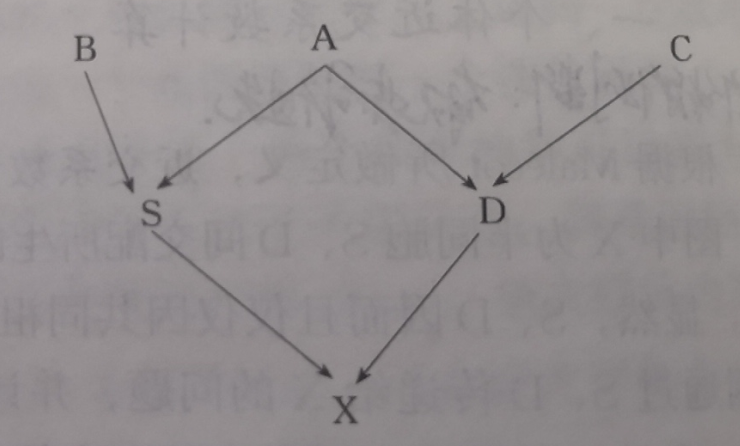

<!DOCTYPE html>


<html lang="zh-CN">


<head>
  <meta name="baidu-site-verification" content="codeva-NSg7ynviLa" />
  <meta charset="utf-8" />
    
  <meta name="viewport" content="width=device-width, initial-scale=1, maximum-scale=1" />
  <title>
    近交系数及A逆的计算 |  
  </title>
  <meta name="generator" content="hexo-theme-ayer">
  
  <link rel="shortcut icon" href="/images/mojie.jpg" />
  
  
<link rel="stylesheet" href="/dist/main.css">

  <link rel="stylesheet" href="https://cdn.jsdelivr.net/gh/Shen-Yu/cdn/css/remixicon.min.css">
  
<link rel="stylesheet" href="/css/custom.css">

  
  <script src="https://cdn.jsdelivr.net/npm/pace-js@1.0.2/pace.min.js"></script>
  
  

  

<link rel="alternate" href="/atom.xml" title="null" type="application/atom+xml">
</head>

</html>

<body>
  <div id="app">
    
      
    <main class="content on">
      <section class="outer">
  <article
  id="post-近交系数及A逆的计算"
  class="article article-type-post"
  itemscope
  itemprop="blogPost"
  data-scroll-reveal
>
  <div class="article-inner">
    
    <header class="article-header">
       
<h1 class="article-title sea-center" style="border-left:0" itemprop="name">
  近交系数及A逆的计算
</h1>
 

    </header>
     
    <div class="article-meta">
      <a href="/posts/ea64e7f3/" class="article-date">
  <time datetime="2022-03-03T12:07:55.000Z" itemprop="datePublished">2022-03-03</time>
</a> 
  <div class="article-category">
    <a class="article-category-link" href="/categories/%E7%90%86%E8%AE%BA%E5%AD%A6%E4%B9%A0/">理论学习</a> / <a class="article-category-link" href="/categories/%E7%90%86%E8%AE%BA%E5%AD%A6%E4%B9%A0/%E7%BA%BF%E6%80%A7%E6%A8%A1%E5%9E%8B/">线性模型</a>
  </div>
  
<div class="word_count">
    <span class="post-time">
        <span class="post-meta-item-icon">
            <i class="ri-quill-pen-line"></i>
            <span class="post-meta-item-text"> 字数统计:</span>
            <span class="post-count">7.6k</span>
        </span>
    </span>

    <span class="post-time">
        &nbsp; | &nbsp;
        <span class="post-meta-item-icon">
            <i class="ri-book-open-line"></i>
            <span class="post-meta-item-text"> 阅读时长≈</span>
            <span class="post-count">35 分钟</span>
        </span>
    </span>
</div>
 
    </div>
      
    <div class="tocbot"></div>


  
    <div class="article-entry" itemprop="articleBody">
       
  <p>在利用混合模型方程组估计育种值时，需要得到个体间的加性遗传相关矩阵 <span class="math inline">\(\mathbf{A}\)</span> 的逆矩阵 <span class="math inline">\(\mathbf{A^{-1}}\)</span> ，虽然我们可以先构建 <span class="math inline">\(\mathbf{A}\)</span> 阵再求逆，但是这在观测值数目很多时计算是非常困难甚至是不可实现的，因而 Henderson 又提出了一种通过系谱直接构建 <span class="math inline">\(\mathbf{A^{-1}}\)</span> 的方法。</p>
<span id="more"></span>
<h1 id="近交系数">近交系数</h1>
<h2 id="近交系数的一般公式">近交系数的一般公式</h2>
<p>近交系数是个体任一基因座的两个等位基因<strong>同源相同</strong> (identical by descent, IBD) 的概率。</p>
<p>举例如下图，X 是半同胞 S, D 间交配所生的近交个体，我们要考虑其近交系数 <span class="math inline">\(F_{X}\)</span> 。</p>
<p></p>
<p>显然，S, D 仅仅因为共同祖先 A 而相关。因此，我们只需要考虑 A 的基因通过 S，D 传递给 X 的问题。<strong>假设 A 不是近交个体</strong>，令 <span class="math inline">\(A_{1}\)</span> 和 <span class="math inline">\(A_{2}\)</span> 表示 A 的任一基因座上的两个等位基因，则 <span class="math inline">\(A_{1}\)</span> 和 <span class="math inline">\(A_{2}\)</span> 同源相同的概率为 0。根据通径分析，则 X 的基因型为 <span class="math inline">\(A_{1}A_{1}\)</span> 的概率是 <span class="math inline">\((\frac{1}{2})^{4} = \frac{1}{16}\)</span> ；同样地，X 的基因型为 <span class="math inline">\(A_{2}A_{2}\)</span> 的概率是 <span class="math inline">\((\frac{1}{2})^{4} = \frac{1}{16}\)</span> 。因此 X 为 <span class="math inline">\(A_{1}A_{1}\)</span> 或 <span class="math inline">\(A_{2}A_{2}\)</span> 的概率是 <span class="math inline">\(\frac{1}{8}\)</span> ，此时这就是 X 的近交系数。 <strong>假设 A 是近交个体</strong>，其近交系数为 <span class="math inline">\(F_{A}\)</span> ，即 <span class="math inline">\(A_{1}\)</span> 和 <span class="math inline">\(A_{2}\)</span> 同源相同的概率为 <span class="math inline">\(F_{A}\)</span>。那么即使 X 的基因型 为 <span class="math inline">\(A_{1}A_{2}\)</span> 和 <span class="math inline">\(A_{2}A_{1}\)</span> (区分父母的基因)，也有一定概率是同源相同的。 X 的基因型 为 <span class="math inline">\(A_{1}A_{2}\)</span> 和 <span class="math inline">\(A_{2}A_{1}\)</span> 的概率也是 <span class="math inline">\(\frac{1}{16}\)</span> ，因此出现任意一种基因型的概率为 <span class="math inline">\(\frac{1}{8}\)</span> ，此时因为 <span class="math inline">\(A_{1}\)</span> 和 <span class="math inline">\(A_{2}\)</span> 同源相同而新增的近交系数概率为 <span class="math inline">\(\frac{1}{8} F_{A}\)</span> ，将这两部分加在一起得到 X 的近交系数为
<span class="math display">\[
F_{X} = (\frac{1}{2})^{3} + (\frac{1}{2})^{3} F_{A} = (\frac{1}{2})^{3}(1+F_{A})
\]</span>
如果个体更加复杂，个体的两个亲本之间可能有更多通径，易得个体近交系数的一般公式为：
<span class="math display">\[
F_{X} = \sum (\frac{1}{2})^{N} (1+F_{A}) = \sum (\frac{1}{2})^{n_{1}+n_{2}+1} (1+F_{A})
\]</span>
其中，N 为亲本相关通径链中的个体数，包括亲本、共同祖先以及通径链中的其他所有个体。<span class="math inline">\(n_{1}\)</span> 和 <span class="math inline">\(n_2\)</span> 分别表示一个通径中个体的父亲和母亲到它们的共同祖先 A 的世代数。在上面的例子中，<span class="math inline">\(n_{1} = n_{2} = 1\)</span> ，<span class="math inline">\(N = 3\)</span> 。</p>
<p>这种根据通径计算近交系数的方式比较麻烦，下面介绍另一种方法。</p>
<h2 id="共亲系数">共亲系数</h2>
<p>共亲系数 (<em>coefficient of kinship</em>)，有时也称为共祖系数 (<em>coefficient of coancestry</em>) ，定义为二者交配所生后代的近交系数，是两个个体所产生的配子中，各随机抽取一个所携带的基因同源相同的概率。</p>
<p>假设我们要考虑的两个个体为 P 和 Q，个体 P 的任一基因座的两个基因是 a 和 b ，个体 Q 的同一基因座的两个等位基因是 c 和 d ，而 P(a=b) 表示两个基因同源相同的概率，于是 P 和 Q 的共亲系数为
<span class="math display">\[
C_{PQ} = \frac{1}{4}[P(a=c)+P(a=d)+P(b=c)+P(b=d)]
\]</span>
假设 P 的两个亲本为 S 和 T，Q 的两个亲本为 V 和 W，容易证明，两个个体的共亲系数等于这两个个体各自父母的共亲系数的平均，也等于一个个体与另外一个个体亲本的共亲系数的平均，即：
<span class="math display">\[
 C_{PQ} = \frac{1}{4}(C_{SV}+C_{SW}+C_{TV}+C_{TW}) \\
  C_{PQ} = \frac{1}{2}(C_{PV}+C_{PW})
\]</span>
从逻辑上简单证明如下，首先我们看第一个式子，我们知道 P 的基因均来自于 S 和 T，从 P 的任一基因座随机提取一个基因，等同于从 S 和 T 同一基因座的四个基因中随机提取一个基因，个体 Q 同理。因此从P 和 Q 这两个个体所产生的配子中，各随机抽取一个所携带的基因同源相同的概率 ，等同于从 S 和 T 的四个基因抽取一个基因，及从V 和 W 的四个基因抽取一个基因，这两个基因同源相同的概率，易得其等于上式。同理可得第二个式子。</p>
这里有一个特殊情况，即个体与其自身的共亲系数。根据定义，它应等于个体任意一个随机基因与该个体的另一个随机抽取的基因同源相同的概率。一个基因与其自身同源相同的概率为1，而与该位点上另一个基因同源相同的概率为 F ，即近交系数。两个概率的平均值为个体与其自身的共亲系数，即：
<span class="math display">\[
C_{XX} = \frac{1}{2}(1+F_{X})
\]</span>
据此，又有：
<span class="math display">\[
F_{X} = 2C_{XX} - 1
\]</span>
根据共亲系数，我们可以很容易地计算一个小群体内各个个体的近交系数。我们将个体按照出生前后排列起来（可以将各个体的父母标在各个体上方），按照以下公式依次计算共亲系数：
$$
<span class="math display">\[\begin{aligned}
F_{X} &amp;=C_{X_{s} X_{d}} \\
C_{X X} &amp;=\frac{1}{2}\left(1+F_{X}\right) \\
C_{X Y}=C_{Y X}=\frac{1}{2}\left(C_{X Y_{s}}+C_{X Y_{d}}\right) &amp;=\frac{1}{4}\left(C_{X_{s} Y_{s}}+C_{X_{s} Y_{d}}+C_{X_{d} Y_{s}}+C_{X_{d} Y_{d}}\right) \\

\end{aligned}\]</span>
<span class="math display">\[
我们可以得到下面的共亲系数矩阵
\]</span>
<span class="math display">\[\begin{aligned}
&amp;\begin{array}{c|c|c|c|c|c|c|c|c|c}
\hline &amp; &amp; \mathrm{I} &amp; \mathrm{I} &amp; \mathrm{HG} &amp; \mathrm{GE} &amp; \mathrm{E} &amp; \mathrm{E} &amp; \mathrm{DC} &amp; \mathrm{BA} \\
&amp; \mathrm{I} &amp; \mathrm{H} &amp; \mathrm{G} &amp; \mathrm{E} &amp; \mathrm{D} &amp; \mathrm{C} &amp; \mathrm{B} &amp; \mathrm{A} &amp; \mathrm{X} \\
\hline \mathrm{I} &amp; 1 / 2 &amp; 1 / 4 &amp; 1 / 4 &amp; 1 / 4 &amp; 1 / 4 &amp; 1 / 8 &amp; 1 / 8 &amp; 3 / 16 &amp; 5 / 32 \\
\mathrm{H} &amp; &amp; 1 / 2 &amp; 1 / 8 &amp; 5 / 16 &amp; 7 / 32 &amp; 5 / 32 &amp; 5 / 32 &amp; 6 / 32 &amp; 11 / 64 \\
\mathrm{G} &amp; &amp; &amp; 1 / 2 &amp; 5 / 16 &amp; 13 / 32 &amp; 5 / 32 &amp; 5 / 32 &amp; 9 / 32 &amp; 7 / 32 \\
\mathrm{E} &amp; &amp; &amp; &amp; 9 / 16 &amp; 14 / 32 &amp; 9 / 32 &amp; 9 / 32 &amp; 23 / 64 &amp; 41 / 128 \\
\mathrm{D} &amp; &amp; &amp; &amp; &amp; 21 / 32 &amp; 7 / 32 &amp; 7 / 32 &amp; 7 / 16 &amp; 21 / 64 \\
\mathrm{C} &amp; &amp; &amp; &amp; &amp; &amp; 1 / 2 &amp; 9 / 64 &amp; 23 / 64 &amp; 1 / 4 \\
\mathrm{~B} &amp; &amp; &amp; &amp; &amp; &amp; &amp; 1 / 2 &amp; 23 / 128 &amp; 87 / 256 \\
\mathrm{~A} &amp; &amp; &amp; &amp; &amp; &amp; &amp; &amp; 39 / 64 &amp; 101 / 256 \\
\mathrm{X} &amp; &amp; &amp; &amp; &amp; &amp; &amp; &amp; &amp; 151 / 256 \\
\hline
\end{array}
\end{aligned}\]</span>
<span class="math display">\[
最后根据公式 $F_{X} =2 C_{X X}-1$ ，得到所有个体的近交系数。
\]</span>
<span class="math display">\[\begin{gathered}
F_{\mathrm{I}}=F_{\mathrm{H}}=F_{\mathrm{G}}=F_{\mathrm{C}}=F_{\mathrm{B}}=0 \\
F_{\mathrm{E}}=1 / 8 \quad F_{\mathrm{D}}=5 / 16 \quad F_{\mathrm{A}}=7 / 32 \quad F_{\mathrm{X}}=23 / 128
\end{gathered}\]</span>
<p>$$</p>
<h2 id="加性遗传相关">加性遗传相关</h2>
<p>个体 <span class="math inline">\(i\)</span> 和 个体 <span class="math inline">\(j\)</span> 之间的加性遗传相关是指在它们的基因组中具有<strong>同源相同</strong> (identical by descent, IBD) 基因 (相同的且来自同一祖先的基因)<strong>的比例</strong>，或者说从个体 <span class="math inline">\(i\)</span> 的基因组中随机抽取的一个基因在个体 <span class="math inline">\(j\)</span> 的基因组中也存在的概率。</p>
<p>采用上面的例子，假设我们要考虑的两个个体为 P 和 Q，个体 P 的任一基因座的两个基因是 a 和 b ，个体 Q 的同一基因座的两个等位基因是 c 和 d，那么这两个个体的加性遗传相关为
<span class="math display">\[
\begin{aligned}
a_{PQ} &amp;= \frac{1}{2}\left( P\left(a \text{ in } \{c,d\}\right) +  P\left(b \text{ in } \{c,d\}\right) \right) \\
&amp;= \frac{1}{2}[P(a=c)+P(a=d)+P(b=c)+P(b=d)] \\
&amp;=2 C_{PQ}
\end{aligned}
\]</span>
因此，<strong>加性遗传相关等于共亲系数的两倍</strong>。根据上面共亲系数的公式，我们有
<span class="math display">\[
F_{\mathrm{X}}=\frac{1}{2} a_{\mathrm{x}_{\mathrm{s}} \mathrm{x}_{\mathrm{d}}} \quad a_{\mathrm{xx}}=1+F_{\mathrm{x}} \quad a_{\mathrm{xy}}=a_{\mathrm{yx}}=\frac{1}{2}\left(a_{\mathrm{xy}_{\mathrm{s}}}+a_{\mathrm{xy}_{\mathrm{d}}}\right) \quad
\]</span>
加性遗传相关恰好是 Wright(1922) 所定义的<strong>亲缘系数</strong> (coefficient of relationship) 计算公式中的分子，故又称其为<strong>分子亲缘相关</strong> (numerator relationship)。</p>
<p>任意两个个体 <span class="math inline">\(i\)</span> 和 <span class="math inline">\(j\)</span> 的加性遗传相关的计算通式为：
<span class="math display">\[
a_{ij} = \sum (\frac{1}{2})^{n_{i}+n_{j}} (1+f_{A})
\]</span>
其中，<span class="math inline">\(n_{i}\)</span> 和 <span class="math inline">\(n_j\)</span> 分别表示连接个体 <span class="math inline">\(i\)</span> 和个体 <span class="math inline">\(j\)</span> 的一个通径中由 <span class="math inline">\(i\)</span> 和 <span class="math inline">\(j\)</span> 到它们的共同祖先 A 的世代数；<span class="math inline">\(f_{A}\)</span> 为 A 的近交系数；<span class="math inline">\(\sum\)</span> 表示当连接个体 <span class="math inline">\(i\)</span> 和 个体 <span class="math inline">\(j\)</span> 的通径不止一个时，要对所有的通径求和。</p>
<p>加性遗传相关也可以理解为个体 <span class="math inline">\(i\)</span> 和 <span class="math inline">\(j\)</span> 的育种值 (加性遗传值) 之间的相关 (故而称之为加性遗传相关)，于是有
<span class="math display">\[
a_{X Y}=\frac{\operatorname{Cov}\left(A_{X}, A_{Y}\right)}{\sigma_{A_{X}} \sigma_{A_{Y}}}
\]</span>
如果 X 和 Y 在同一群体，则 <span class="math inline">\(\sigma_{A_{X}} = \sigma_{A_{Y}} = \sigma_{A}\)</span> ，于是有
<span class="math display">\[
\operatorname{Cov}\left(A_{X}, A_{Y}\right)=a_{X Y} \sigma_{A}^{2}
\]</span>
对于一个有 <span class="math inline">\(n\)</span> 个个体的群体，它们之间的育种值的协方差矩阵为
<span class="math display">\[
\operatorname{Var}(\mathbf{a})=\mathbf{A} \sigma_{A}^{2}
\]</span>
其中， <span class="math inline">\(\mathbf{a}\)</span> 为 n 个个体的育种值向量; <span class="math inline">\(\mathbf{A}\)</span> 为个个体间的加性遗传相关矩阵。</p>
<h2 id="亲缘系数">亲缘系数</h2>
<p>近交系数的大小，是对双亲间的亲缘程度的间接度量，双亲间的亲缘程度也可用二者间的亲缘系数直接度量。据 Wright (1921) ，<strong>亲缘系数是指两个个体间加性基因效应间的相关</strong>（不懂？）。设只考虑一个基因座，假设我们要考虑的两个个体为 P 和 Q，个体 P 的任一基因座的两个基因是 a 和 b ，个体 Q 的同一基因座的两个等位基因是 c 和 d，则相对于群体均值的加性基因效应分别为：
<span class="math display">\[
A_{P} = \alpha_{a} + \alpha_{b} \\
A_{Q} = \alpha_{c} + \alpha_{d} \\
\]</span>
由此，<span class="math inline">\(A_{P}\)</span> 和 <span class="math inline">\(A_{Q}\)</span> 的协方差为
<span class="math display">\[
\begin{aligned}
Cov(A_{P},A_{Q}) &amp;=  E\left[(\alpha_{a} + \alpha_{b})(\alpha_{c} + \alpha_{d})\right] \\
&amp;=  E(\alpha_{a} \alpha_{c}) + E(\alpha_{a} \alpha_{d}) +E(\alpha_{b} \alpha_{c}) +E(\alpha_{b} \alpha_{d}) \\
\end{aligned}
\]</span>
若令基础群的加性基因效应方差为 <span class="math inline">\(\sigma_{A}^{2}\)</span> ，有：(这几个公式不知道怎么来的)
<span class="math display">\[
\begin{aligned}
E\left(\alpha_{a} \alpha_{c}\right)=P(a=c) E\left(\alpha_{a}^{2}\right)=P(a=c) \frac{1}{2} \sigma_{A}^{2} \\
E\left(\alpha_{a} \alpha_{d}\right)=P(a=d) E\left(\alpha_{a}^{2}\right)=P(a=d) \frac{1}{2} \sigma_{A}^{2} \\
E\left(\alpha_{b} \alpha_{c}\right)=P(b=c) E\left(\alpha_{b}^{2}\right)=P(b=c) \frac{1}{2} \sigma_{A}^{2} \\
E\left(\alpha_{b} \alpha_{d}\right)=P(b=d) E\left(\alpha_{b}^{2}\right)=P(b=d) \frac{1}{2} \sigma_{A}^{2} \\
\end{aligned}
\]</span>
因而：
<span class="math display">\[
\begin{gathered}
\operatorname{Cov}\left(A_{P}, A_{Q}\right)=\frac{1}{2}[P(a=c)+P(a=d)+ \\
P(b=c)+P(b=d)] \sigma_{A}^{2}=2 C_{P Q} \sigma_{A}^{2}
\end{gathered}
\]</span>
同时，我们有
<span class="math display">\[
\begin{gathered}
\sigma_{A_{P}}^{2}=\operatorname{Cov}\left(A_{P}, A_{P}\right)=a_{P P} \sigma_{A}^{2} =2 C_{P P} \sigma_{A}^{2} \\
\sigma_{A_{Q}}^{2}=\operatorname{Cov}\left(A_{Q}, A_{Q}\right)=a_{Q Q} \sigma_{A}^{2}=2 C_{Q Q} \sigma_{A}^{2}
\end{gathered}
\]</span>
所以
<span class="math display">\[
r_{\mathrm{PQ}}=\frac{\operatorname{Cov}\left(A_{\mathrm{P}}, A_{\mathrm{Q}}\right)}{\sigma_{\mathrm{A}_{\mathrm{P}}} \sigma_{\mathrm{A}_{\mathrm{Q}}}}=\frac{2 C_{\mathrm{PQ}}}{\sqrt{2 C_{\mathrm{PP}} \cdot 2 C_{\mathrm{QQ}}}}=\frac{a_{\mathrm{PQ}}}{\sqrt{a_{\mathrm{PP}} a_{\mathrm{QQ}}}}=\frac{ \sum (\frac{1}{2})^{n_{i}+n_{j}} (1+f_{A})}{\sqrt{\left(1+F_{\mathrm{P}}\right)\left(1+F_{\mathrm{Q}}\right)}}
\]</span>
我尽可能地查找了资料和文献，还是没搞懂这个亲缘系数是怎么来的，最原始的文献是 Wright 1922 年的文章，我看也是直接给的公式。</p>
<p>基于 <a target="_blank" rel="noopener" href="http://nce.ads.uga.edu/wiki/lib/exe/fetch.php?media=gsip.pdf">gsip.pdf</a> 中，Legarra 是直接使用加性遗传相关，而不是Wright 定义的亲缘系数，原文如下：</p>
<blockquote>
<p>Wright (1922) introduced the notion of relationships as correlation between genetic effects of two individuals. For practical reasons, it is more convenient to use what is often called “numerator relationship” (Quaas 1976) or simply “relationship” or “additive relationship”. This equals the standardized covariance (not the correlation) between the additive genetic values of two individuals. The pedigree relationship is not equal to the correlation if there is inbreeding. There are several terms used to talk about relationships, and here we will present the classical definitions according to pedigree</p>
</blockquote>
<h1 id="a-阵的计算方法">A 阵的计算方法</h1>
<p>本章节内容来自于张勤老师的《动物遗传育种中的计算方法》。</p>
<p><span class="math inline">\(\mathbf{A}\)</span> 阵是由个体间的加性遗传相关组成的矩阵。</p>
<h2 id="动物模型下-a-阵的计算">动物模型下 A 阵的计算</h2>
<p>在动物模型下，<span class="math inline">\(\mathbf{A}\)</span> 阵是所有动物个体之间的加性遗传相关矩阵，<span class="math inline">\(\mathbf{A}\)</span> 阵的每一元素可用以下的递推公式来计算：
<span class="math display">\[
\begin{gathered}
a_{i i}= \begin{cases}1+0.5 a_{s_{i} d_{i}}, &amp; \text { 当 } s_{i} \text { 和 } d_{i} \text { 均已知 } \\
1, &amp; \text { 当 } s_{i} \text { 或 } d_{i} \text { 末知 }\end{cases} \\
a_{i j}=a_{j i}= \begin{cases}0.5\left(a_{i s_{j}}+a_{i d_{j}}\right), &amp; \text { 当 } s_{j} \text { 和 } d_{j} \text { 均已知 } \\
0.5 a_{i s_{j}}, &amp; \text { 当 } s_{j} \text { 已知, } d_{j} \text { 末知 } \\
0.5 a_{i d_{j}}, &amp; \text { 当 } d_{j} \text { 已知, } s_{j} \text { 末知 } \\
0, &amp; \text { 当 } s_{j} \text { 和 } d_{j} \text { 均末知 }\end{cases}
\end{gathered}
\]</span>
其中，<span class="math inline">\(s_{i}(s_{j})\)</span> 和 <span class="math inline">\(d_{i}(d_{j})\)</span> 为个体 <span class="math inline">\(i(j)\)</span> 的父亲和母亲。</p>
<p>在利用以上公式计算 <span class="math inline">\(\mathbf{A}\)</span> 阵时，要先将系谱中的所有个体按个体号、父号和母号列成一个三列表，在列表时应注意：</p>
<ol type="1">
<li>在个体一列中应包括所有在父和母列中出现过的个体</li>
<li>在个体一列中应保证后代绝不会出现在其父母之前，一般可按出生日期排序，先出生的在前。</li>
<li>为便于编写程序，个体应用自然数从 1 开始连续编号。</li>
</ol>
<p>下面举例说明，设有 7 个个体，列如下表。
<span class="math display">\[
\begin{array}{ccc}
\hline \text { 个体 } &amp; \text { 父 } &amp; \text { 母 } \\
\hline 1 &amp; - &amp; - \\
2 &amp; - &amp; - \\
3 &amp; 1 &amp; - \\
4 &amp; 1 &amp; 2 \\
5 &amp; 3 &amp; 4 \\
6 &amp; 1 &amp; 4 \\
7 &amp; 5 &amp; 6 \\
\hline
\end{array}
\]</span>
对于其中双亲未知的个体，我们假设它们都是非近交个体，且彼此无亲缘关系，这些个体就构成了所谓的<strong>基础群</strong> (base population) ，这些个体所对应的 <span class="math inline">\(\mathbf{A}\)</span> 阵中的子矩阵为一单位阵，对于本例而言，我们有
<span class="math display">\[
a_{11}=a_{22}=1, a_{12}=a_{21}=0
\]</span>
从这些元素出发可计算出 <span class="math inline">\(\mathbf{A}\)</span> 中所有的其他元素，如
<span class="math display">\[
\begin{aligned}
&amp;a_{13}=a_{31}=0.5 a_{11}=0.5 \\
&amp;a_{23}=a_{32}=0 \\
&amp;a_{33}=1 \\
&amp;a_{14}=a_{41}=0.5\left(a_{11}+a_{21}\right)=0.5 \\
&amp;a_{44}=1+0.5 a_{12}=1
\end{aligned}
\]</span>
完整的 <span class="math inline">\(\mathbf{A}\)</span> 阵为（计算过程是只算上三角矩阵，然后第一列，第二列，第三列的顺序，也就是说计算顺序为 <span class="math inline">\(a_{11}, a_{21}, a_{22}, a_{31}, a_{32},a_{33}, a_{41}, \cdots ,\)</span> 的顺序 ）
<span class="math display">\[
\boldsymbol{A}=\left[\begin{array}{lllllll}
1 &amp; 0 &amp; 0.5 &amp; 0.5 &amp; 0.5 &amp; 0.75 &amp; 0.625 \\
&amp; 1 &amp; 0 &amp; 0.5 &amp; 0.25 &amp; 0.25 &amp; 0.25 \\
&amp; &amp; 1 &amp; 0.25 &amp; 0.625 &amp; 0.375 &amp; 0.5 \\
&amp; &amp; &amp; 1 &amp; 0.625 &amp; 0.75 &amp; 0.6875 \\
&amp; &amp; &amp; &amp; 1.125 &amp; 0.5625 &amp; 0.84375 \\
&amp; \text { 对 } &amp; \text { 称 } &amp; &amp; &amp; 1.25 &amp; 0.90625 \\
&amp; &amp; &amp; &amp; &amp; &amp; 1.28125
\end{array}\right]
\]</span></p>
<h1 id="a逆的计算方法">A逆的计算方法</h1>
<h2 id="l-矩阵">L 矩阵</h2>
<p>Henderson(1975a, 1976) 提出了一种可以从系谱直接构造 <span class="math inline">\(\mathbf{A^{-1}}\)</span> 的简洁方法，正是由于这一方法的提出，才使得BLUP法，尤其是动物模型 BLUP 法在家畜育种中的真正广泛使用成为可能。</p>
<p>由于 <span class="math inline">\(\mathbf{A}\)</span> 阵为正定对称矩阵，根据科列斯基分解 (<strong>Cholesky decomposition</strong>)，它总可以分解为
<span class="math display">\[
\mathbf{A} = \mathbf{LL&#39;}
\]</span>
其中 <span class="math inline">\(\mathbf{L}\)</span> 是一个下三角矩阵，<strong>其中基础群体构成的 <span class="math inline">\(b \times b\)</span> 的子矩阵也是一个单位矩阵</strong>。简单证明以下，首先我们知道 <span class="math inline">\(\mathbf{A}\)</span> 阵基础群体的 <span class="math inline">\(b \times b\)</span> 的子矩阵也是一个单位矩阵，我们将 <span class="math inline">\(\mathbf{A}\)</span> 阵和 <span class="math inline">\(\mathbf{L}\)</span> 阵分块如下
<span class="math display">\[
\mathbf{A} =\left[\begin{array}{c}
\mathbf{I} &amp; \mathbf{K_{1}} \\
\mathbf{K_{2}} &amp; \mathbf{K_{3}}
\end{array}\right],
\mathbf{L} =\left[\begin{array}{c}
\mathbf{L_{1}} &amp; \mathbf{0} \\
\mathbf{K_{3}} &amp; \mathbf{L_{2}}
\end{array}\right]
\]</span>
由 <span class="math inline">\(\mathbf{A} = \mathbf{LL&#39;}\)</span> ，得到 <span class="math inline">\(\mathbf{A}\)</span> 阵的左上角的子矩阵有计算公式如下
<span class="math display">\[
\mathbf{L_{1}L_{1}^{\prime}} = \mathbf{I}
\]</span>
逐元素计算得到 <span class="math inline">\(\mathbf{L_{1}} = \mathbf{I}\)</span> （证明其对角线元素均为 1，非对角线元素均为0，这一步证明略 ） ，得证。</p>
<strong>假设个体 <span class="math inline">\(t\)</span> 的父母均已知</strong>，分别为 p 和 q，p &lt; q ，假设总个体数目为 n ，假设个体 <span class="math inline">\(i &lt; t\)</span> 。根据 <span class="math inline">\(\mathbf{A} = \mathbf{LL&#39;}\)</span> ，我们有
<span class="math display">\[
a_{ti} = \sum_{k=1}^{n} l_{tk}l_{ki}^{\prime}=  \sum_{k=1}^{n} l_{tk}l_{ik}\\
\]</span>
同理，我们有
<span class="math display">\[
a_{ip}=  \sum_{k=1}^{n} l_{ik}l_{pk} \\
a_{iq}=  \sum_{k=1}^{n} l_{ik}l_{qk} \\
\]</span>
根据加性遗传相关的计算公式 <span class="math inline">\(a_{ti} = 0.5(a_{ip}+a_{iq})\)</span> ，将上式带入，我们有
<span class="math display">\[
\begin{aligned}
\sum_{k=1}^{n} l_{ik}l_{tk} &amp;= 0.5(\sum_{k=1}^{n} l_{ik}l_{pk} + \sum_{k=n}^{n} l_{ik}l_{qk} ) \\
\end{aligned}
\]</span>
令 <span class="math inline">\(i = 1,2,\cdots,t-1\)</span> ，我们得到
<span class="math display">\[
\begin{aligned}
l_{11}l_{t1} &amp;= 0.5(l_{11}l_{p1}+l_{11}l_{p2}) \\
l_{21}l_{t1} + l_{22}l_{t2} &amp;= 0.5(l_{21}l_{p1} + l_{22}l_{p2}+l_{21}l_{q1} + l_{22}l_{q2}) \\
\cdots
\end{aligned}
\]</span>
整理一下，我们得到
<span class="math display">\[
l_{ti} = 0.5(l_{pi}+l_{qi})
\]</span>
根据加性遗传相关的另一个计算公式 <span class="math inline">\(a_{tt} = 1+0.5a_{pq}\)</span> ，同理可得下面的公式
$$
<span class="math display">\[\begin{aligned}
\sum_{k=1}^{t} l_{tk}{}^{2} &amp;= 1 + 0.5\sum_{k=1}^{p} l_{pk}l_{qk}  \\
l_{tt}{}^{2} &amp;= 1 + 0.5\sum_{k=1}^{p} l_{pk}l_{qk} - \sum_{k=1}^{t-1} l_{tk}{}^{2}  \\
l_{tt}{}^{2} &amp;= 1 + 0.5\sum_{k=1}^{p} l_{pk}l_{qk} - \sum_{k=1}^{t-1} (0.5(l_{pk}+l_{qk})){}^{2}  \\
l_{tt}{}^{2} &amp;= 1 + 0.5\sum_{k=1}^{p} l_{pk}l_{qk} - \sum_{k=1}^{q} (0.5(l_{pk}+l_{qk})){}^{2}  \\
l_{tt}{}^{2} &amp;= 1 + 0.5\sum_{k=1}^{p} l_{pk}l_{qk} - \sum_{k=1}^{q} (0.25l_{pk}^{2}+0.5l_{pk}l_{qk}+0.25l_{qk}^{2})  \\
l_{tt}{}^{2} &amp;= 1 + 0.5\sum_{k=1}^{p} l_{pk}l_{qk} -0.25 \sum_{k=1}^{p}  l_{pk}^{2}- 0.5 \sum_{k=1}^{p} l_{pk}l_{qk}  -  0.25 \sum_{k=1}^{q}l_{qk}^{2}  \\
l_{tt}{}^{2} &amp;= 1  -0.25 \sum_{k=1}^{p}  l_{pk}^{2}  -  0.25 \sum_{k=1}^{q}l_{qk}^{2}  \\

\end{aligned}\]</span>
<p><span class="math display">\[
我们有 $a_{pp} = 1+f_{p} = \sum_{k=1}^{p} l_{pk}^{2}$ ， $a_{qq} = 1+f_{q} = \sum_{k=1}^{q} l_{qk}^{2}$ ，带入得到
\]</span>
l_{tt}{}^{2} = 1 -0.25 (1+f_{p}) - 0.25 (1+f_{q}) = 0.5 - 0.25 (f_{p} + f_{q}) \
<span class="math display">\[
整理一下，得到下面这两个式子
\]</span>
l_{ti} = 0.5(l_{pi}+l_{qi})
$$</p>
<p><span class="math display">\[
l_{tt} = \sqrt{ 0.5 - 0.25 (f_{p} + f_{q})}
\]</span></p>
<p><strong>假设个体 <span class="math inline">\(t\)</span> 知道一个亲本 p</strong> ，同理可得
<span class="math display">\[
l_{ti} = 0.5l_{pi}
\]</span></p>
<p><span class="math display">\[
l_{tt} = \sqrt{ 0.75 - 0.25 f_{p} }
\]</span></p>
<p><strong>假设个体 <span class="math inline">\(t\)</span> 两个亲本均未知</strong> ，同理可得
<span class="math display">\[
l_{ti} = 0
\]</span></p>
<p><span class="math display">\[
l_{tt} = 1
\]</span></p>
<h2 id="进一步分解">进一步分解</h2>
<p><span class="math inline">\(\mathbf{L}\)</span> 又可以进一步分解为
<span class="math display">\[
\mathbf{L} = \mathbf{TD}
\]</span>
其中，<span class="math inline">\(\mathbf{D}\)</span> 是一个对角矩阵，其对角线元素 (<span class="math inline">\(d_{i}\)</span>) 等于 <span class="math inline">\(\mathbf{L}\)</span> 矩阵的对角线元素 (<span class="math inline">\(l_{ii}\)</span>) ，即 <span class="math inline">\(d_{i}= l_{ii}\)</span> ；<span class="math inline">\(\mathbf{T}\)</span> 阵为下三角矩阵，其对角线元素全为1。</p>
因此，我们有 <span class="math inline">\(\mathbf{A} = \mathbf{T D^{2} T^{\prime}}\)</span> ，其对角线元素计算公式如下
<span class="math display">\[
A_{ii} = \sum_{j=1}^{i} T_{ij}^{2} D^{2}_{jj}
\]</span>
同时，<span class="math inline">\(\mathbf{A^{-1}}\)</span> 可写为
<span class="math display">\[
\mathbf{A^{-1}=\left(L L^{\prime}\right)^{-1}=\left(T D D T^{\prime}\right)^{-1}=\left(T^{\prime}\right)^{-1} D^{-2} T^{-1}}
\]</span>
其中，<span class="math inline">\(\mathbf{D^{2}}\)</span> 矩阵元素计算方式如下，其中 <span class="math inline">\(F_{i}\)</span> 为 近交系数。
$$
<span class="math display">\[\begin{aligned}

D^{2}_{ii} &amp; = 0.5 - 0.25(F_{s_{i}} + F_{d_{i}}) \quad \text{当 i 的父母均已知}\\
&amp;= 0.75 - 0.25 F_{p_{i}}  \quad \text{当 i 的单个亲本已知}\\
&amp;= 1 \quad \text{当 i 的两个亲本均未知}\\


\end{aligned}\]</span>
<p>$$</p>
根据 <span class="math inline">\(\mathbf{L}\)</span> 矩阵元素，我们可以按列计算 <span class="math inline">\(\mathbf{T}\)</span> 阵元素，计算公式如下（系谱按照出生日期顺序排序）
$$
<span class="math display">\[\begin{aligned}
&amp; \text{for } j=1 \text{ to } N \\
&amp; \quad T_{ii} = 1 \\

&amp;\\
&amp; \text{for } i=j+1 \text{ to } N \\
&amp; \quad T_{ij} = (T_{s_{i}j} + T_{d_{i}j})/2 \quad \text{当 i 的父母均已知}\\
&amp; \quad \quad   = T_{p_{i}j} /2 \quad \text{当 i 的单个亲本已知}\\
&amp; \quad \quad   = 0 \quad \text{当 i 的两个亲本均未知}\\


\end{aligned}\]</span>
<p>$$</p>
<p>如果按行来计算 <span class="math inline">\(\mathbf{T}\)</span> 阵元素，其第 <span class="math inline">\(i\)</span> 行元素等于个体 <span class="math inline">\(i\)</span> 从其直系祖先中得到的基因比例（个体与其亲本是 0.5 ，与其祖父母是 0.25 ，每隔一代乘以 0.5），比如 <span class="math inline">\(T_{is_{i}} = T_{id_{i}} = 0.5\)</span> 。如果两个个体没有直系的亲缘关系，那么 <span class="math inline">\(T_{ij} = 0\)</span> 。因此， <span class="math inline">\(\mathbf{T}\)</span> 阵第 <span class="math inline">\(i\)</span> 行元素可以拆分与个体 <span class="math inline">\(i\)</span> 的亲本的元素的 1/2 的累积之和，即
<span class="math display">\[
T_{ij} = \sum_{k \in P_{j}} 0.5 T_{ik} = \sum_{k \in ANC_{i} \cap P_{j}} 0.5 T_{ik}
\]</span>
这里 <span class="math inline">\(P_{j}\)</span> 为个体 <span class="math inline">\(j\)</span> 的所有后代， <span class="math inline">\(ANC_{i}\)</span> 为个体 <span class="math inline">\(i\)</span> 的所有祖先（包括个体 <span class="math inline">\(i\)</span> 本身），第二个等号就是只提取 <span class="math inline">\(P_{j}\)</span> 中为个体 <span class="math inline">\(i\)</span> 祖先的个体，因为不是个体 <span class="math inline">\(i\)</span> 祖先 ，那么 <span class="math inline">\(T_{ik} = 0\)</span> ，加不加一样 。</p>
<h2 id="t-1-矩阵">T^-1 矩阵</h2>
<p>Henderson 证明，<span class="math inline">\(\mathbf{T^{-1}}\)</span> 中的对角线元素全为1，在其第 <span class="math inline">\(i\)</span> 行上，第 <span class="math inline">\(i\)</span> 个个体的每一已知亲本所对应的元素为 -0.5 ，其余元素均为0。对于上面的例子，我们有
<span class="math display">\[
\mathbf{T^{-1}}=\left[\begin{array}{cccccc}
1 &amp; &amp; &amp; &amp; &amp; \\
0 &amp; 1 &amp; &amp; &amp; \\
-0.5 &amp; 0 &amp; 1 &amp; &amp; \\
-0.5 &amp; -0.5 &amp; 0 &amp; 1 &amp; \\
0 &amp; 0 &amp; -0.5 &amp; -0.5 &amp; 1 &amp; \\
-0.5 &amp; 0 &amp; 0 &amp; -0.5 &amp; 0 &amp; 1 \\
0 &amp; 0 &amp; 0 &amp; 0 &amp; -0.5 &amp; -0.5 &amp; 1
\end{array}\right]
\]</span>
证明如下，我们先考虑下面这个分块矩阵，其中 <span class="math inline">\(\mathbf{P_{0}}\)</span> 是一个 <span class="math inline">\(n \times n\)</span> 的下三角矩阵，<span class="math inline">\(\mathbf{a&#39;}\)</span> 是一个 <span class="math inline">\(1 \times n\)</span> 的向量， <span class="math inline">\(\mathbf{0}\)</span> 是一个 <span class="math inline">\(n \times 1\)</span> 的向量。
<span class="math display">\[
\mathbf{P}_{1}=\left[\begin{array}{cc}
\mathbf{P}_{0} &amp; \mathbf{0} \\
\mathbf{a}^{\prime} \mathbf{P}_{0} &amp; 1
\end{array}\right]
\]</span>
那么其逆矩阵为（假设可逆，即对角线元素均不为0）
<span class="math display">\[
\mathbf{P}_{1}^{-1}=\left[\begin{array}{cc}
\mathbf{P}_{0}^{-1} &amp; \mathbf{0} \\
-\mathbf{a}^{\prime} &amp; 1
\end{array}\right]
\]</span>
因为存在
<span class="math display">\[
\left[\begin{array}{cc}
\mathbf{P}_{0} &amp; \mathbf{0} \\
\mathbf{a}^{\prime} \mathbf{P}_{0} &amp; 1
\end{array}\right] \left[\begin{array}{cc}
\mathbf{P}_{0}^{-1} &amp; \mathbf{0} \\
-\mathbf{a}^{\prime} &amp; 1
\end{array}\right] = \left[\begin{array}{cc}
\mathbf{P}_{0}^{-1} &amp; \mathbf{0} \\
-\mathbf{a}^{\prime} &amp; 1
\end{array}\right] \left[\begin{array}{cc}
\mathbf{P}_{0} &amp; \mathbf{0} \\
\mathbf{a}^{\prime} \mathbf{P}_{0} &amp; 1
\end{array}\right] = \mathbf{I}
\]</span>
我们知道 <span class="math inline">\(\mathbf{L}\)</span> 矩阵中某个体的非对角线元素等于其父母同位置非对角线元素的一半，即 <span class="math inline">\(L_{ti} = 0.5(L_{pi}+L_{qi})\)</span> 。</p>
<p>根据矩阵乘法公式，我们知道一个矩阵 <span class="math inline">\(\mathbf{A}\)</span> 右乘一个对角矩阵 <span class="math inline">\(\mathbf{D}\)</span> 的结果为 <span class="math inline">\(\mathbf{A}\)</span> 的每一列乘以 <span class="math inline">\(d_{i}\)</span> ，举例如下
<span class="math display">\[
\begin{aligned}
\mathbf{A D} &amp;=\left(\begin{array}{lll}
a_{11} &amp; a_{12} &amp; a_{13} \\
a_{21} &amp; a_{22} &amp; a_{23} \\
a_{31} &amp; a_{32} &amp; a_{33}
\end{array}\right)\left(\begin{array}{lll}
d_{1} &amp; 0 &amp; 0 \\
0 &amp; d_{2} &amp; 0 \\
0 &amp; 0 &amp; d_{3}
\end{array}\right) \\
&amp;=\left(\begin{array}{lll}
d_{1} a_{11} &amp; d_{2} a_{12} &amp; d_{3} a_{13} \\
d_{1} a_{21} &amp; d_{2} a_{22} &amp; d_{3} a_{23} \\
d_{1} a_{31} &amp; d_{2} a_{32} &amp; d_{3} a_{33}
\end{array}\right)
\end{aligned}
\]</span>
因此易得 <span class="math inline">\(\mathbf{T}\)</span> 矩阵同样满足 <span class="math inline">\(\mathbf{L}\)</span> 矩阵的这个性质，即某个体的非对角线元素等于其父母同位置非对角线元素的一半，我们有（<span class="math inline">\(b\)</span> 为基础群体数目，<span class="math inline">\(\mathbf{T_{b}} = \mathbf{L_{b}} = \mathbf{I_{b}}\)</span> ）
<span class="math display">\[
\begin{aligned}
\mathbf{T}_{b+1} &amp;=\left[\begin{array}{ll}
\mathbf{T}_{b} &amp; \mathbf{0} \\
\mathbf{a}_{b}^{\prime} \mathbf{T}_{b} &amp; 1
\end{array}\right] \\
&amp;=\left[\begin{array}{ll}
\mathbf{I}_{b} &amp; \mathbf{0} \\
\mathbf{a}_{b}^{\prime} \mathbf{T}_{b} &amp; 1
\end{array}\right] \\
\mathbf{T}_{b+2} &amp;=\left[\begin{array}{lll}
\mathbf{T}_{b+1} &amp; \mathbf{0} &amp; \\
\mathbf{a}_{b+1}^{\prime} \mathbf{T}_{b+1} &amp; 1
\end{array}\right] \\
&amp;\vdots  \\
\mathbf{T}_{n} &amp;=\left[\begin{array}{ll}
\mathbf{T}_{n-1} &amp; \mathbf{0} \\
\mathbf{a}_{n-1}^{\prime} \mathbf{T}_{n-1} &amp; 1
\end{array}\right]
\end{aligned}
\]</span>
其中 <span class="math inline">\(\mathbf{a_{i}^{\prime}}\)</span> 中的元素除了第 <span class="math inline">\(i+1\)</span> 的亲本为 0.5 之外，其余均为 0 （<strong>这就要求系谱需要排序，亲本需要排在个体前面</strong>）。</p>
根据上面的求逆公式，我们可知 <span class="math inline">\(\mathbf{T^{-1}}\)</span> 矩阵是一个下三角矩阵，其对角线元素均为 1 ；非对角线元素中除了亲本是 -0.5 之外其余元素均是 0 。
$$
<span class="math display">\[\begin{aligned}
\mathbf{T}_{b+1}^{-1} 
&amp;=\left[\begin{array}{ll}
\mathbf{I}_{b} &amp; \mathbf{0} \\
-\mathbf{a}_{b}^{\prime}  &amp; 1
\end{array}\right] \\
\mathbf{T}_{b+2}^{-1} 
&amp;=\left[\begin{array}{lll}
\mathbf{T}_{b+1}^{-1} &amp; \mathbf{0} &amp; \\
-\mathbf{a}_{b+1}^{\prime} &amp; 1
\end{array}\right] \\

&amp;\vdots  \\
\mathbf{T}_{n}^{-1} &amp;=\left[\begin{array}{ll}
\mathbf{T}_{n-1}^{-1} &amp; \mathbf{0} \\
-\mathbf{a}_{n-1}^{\prime} &amp; 1
\end{array}\right]
\end{aligned}\]</span>
<p>$$
得证。</p>
<h2 id="d-2-矩阵">D^-2 矩阵</h2>
<p>而 <span class="math inline">\(\mathbf{D^{-2}}\)</span> 仍是对角矩阵，设 <span class="math inline">\(d_{i}^{*}\)</span> 为其对角线上的第 <span class="math inline">\(i\)</span> 个元素，根据上面 <span class="math inline">\(\mathbf{L}\)</span> 矩阵对角元素的公式，易得
<span class="math display">\[
d_{i}^{*}=\left\{\begin{array}{l}
\frac{1}{0.5-0.25\left(f_{i}+f_{d}\right)}, \quad &amp;\text{当个体的双亲 s 和 d 已知} \\
\frac{1}{0.75-0.25 f_{p}}, \quad &amp;\text{当个体的一个亲本 p 已知} \\
1, \quad &amp; \text{当个体的双亲未知} 
\end{array}\right.
\]</span>
其中，<span class="math inline">\(f_{s}\)</span>，<span class="math inline">\(f_{d}\)</span>，<span class="math inline">\(f_{p}\)</span> 为近交系数。如果这些近交系数已知，则易得 <span class="math inline">\(\mathbf{D^{-2}}\)</span> ，进而求得 <span class="math inline">\(\mathbf{A^{-1}}\)</span> 。</p>
<p>如果我们已经求出了 <span class="math inline">\(\mathbf{A}\)</span> 阵，则这些近交系数可以很容易地从 <span class="math inline">\(\mathbf{A}\)</span> 阵的对角线元素求得。</p>
<p>当群体为非近交群体（所有个体的近交系数均为0），可得
<span class="math display">\[
d_{i}^{*}= \begin{cases}2, &amp; \text { 当个体 } i \text { 的双亲已知 } \\ 4 / 3, &amp; \text { 当个体 } i \text { 的一个亲本已知 } \\ 1, &amp; \text { 当个体 } i \text { 的双亲末知 }\end{cases}
\]</span>
## 另一种构建A逆的方法</p>
<p>Quass (1976) 提出了求 <span class="math inline">\(d_{i}^{*}\)</span> 的另一种简便方法，现介绍如下。这里的内容我其实没有仔细看，感觉挺繁琐的，不如先构建 <span class="math inline">\(\mathbf{A}\)</span> 阵来得到近交系数的做法的逻辑简洁。</p>
<p>由 <span class="math inline">\(d_{i} = l_{ii}\)</span> ，可得 <span class="math inline">\(d_{i}^{*} = 1/l_{ii}^{2}\)</span> ，所以只要求出 <span class="math inline">\(l_{ii}\)</span> ，就可得到 <span class="math inline">\(d_{i}^{*}\)</span> 。将 <span class="math inline">\(f_{i} = a_{ii}-1\)</span> 带入上式得到
<span class="math display">\[
l_{ii}=\frac{1}{\sqrt{d_{i}^{*}}}=\left\{\begin{array}{l}
{\left[1-0.25\left(a_{s s}+a_{d d}\right)\right]^{0.5}} , \quad &amp;\text{当个体的双亲 s 和 d 已知} \\
\left(1-0.25 a_{\rho \rho}\right)^{0.5} , \quad &amp;\text{当个体的一个亲本 p 已知} \\
1, \quad &amp; \text{当个体的双亲未知} 
\end{array}\right.
\]</span>
由 <span class="math inline">\(\mathbf{A} = \mathbf{LL&#39;}\)</span> ，可得 <span class="math inline">\(a_{ii} = \sum_{k=1}^{i} l_{ik}^{2}\)</span> 。注意在求 <span class="math inline">\(a_{ii}\)</span> 时要用到 <span class="math inline">\(\mathbf{L}\)</span> 的非对角线元素。将这个式子带入上式，我们得到</p>
<p><span class="math display">\[
l_{ii}=\frac{1}{\sqrt{d_{i}^{*}}}=\left\{\begin{array}{l}
 {\left[1-0.25\left(\sum_{i=1}^{s}l_{s i}^{2}+\sum_{i=1}^{m}l_{m i}^{2}\right)\right]^{0.5}} , \quad &amp;\text{当个体的双亲 s 和 d 已知} \\
\left(1-0.25 \sum_{i=1}^{p}l_{p i}^{2}\right)^{0.5} , \quad &amp;\text{当个体的一个亲本 p 已知} \\
1, \quad &amp; \text{当个体的双亲未知} 
\end{array}\right.
\]</span>
同时我们有
<span class="math display">\[
\underset{(i &gt; j)}{l_{i j}}=t_{i j} d_{j}=\left\{\begin{array}{l}
0.5\left(l_{s j}+l_{d j}\right) , \quad &amp;\text{当个体 i 的双亲 s 和 d 已知} \\
0.5 l_{p j} , \quad &amp;\text{当个体 i 的一个亲本 p 已知} \\
0 , \quad &amp; \text{当个体 i 的双亲未知} 
\end{array}\right.
\]</span>
综上所述，可按下列步骤计算 <span class="math inline">\(\mathbf{A^{-1}}\)</span> ：</p>
<ol type="1">
<li><p>按计算 <span class="math inline">\(\mathbf{A}\)</span> 阵时的要求将系谱中的所有个体列表；</p></li>
<li><p>将 <span class="math inline">\(\mathbf{A^{-1}}\)</span> 中的所有元素置为 0</p></li>
<li><p>设置两个维数为 <span class="math inline">\(n\)</span> 的零向量 <span class="math inline">\(\mathbf{v}\)</span> 和 <span class="math inline">\(\mathbf{a}\)</span> ， <span class="math inline">\(\mathbf{v}\)</span> 用于存放 <span class="math inline">\(l_{ii}\)</span> ，并临时存放 <span class="math inline">\(l_{ki}\)</span> (<span class="math inline">\(k=i+1,\cdots,n\)</span>)，<span class="math inline">\(\mathbf{a}\)</span> 用于存放 <span class="math inline">\(a_{ii}\)</span> 。</p></li>
<li><p>对于 <span class="math inline">\(i = 1,\cdots,n\)</span> ，计算</p></li>
</ol>
<ul>
<li><p><span class="math inline">\(v_{i} = l_{ii}\)</span> ，其中 <span class="math inline">\(l_{ii}\)</span> 用上式计算，即：
<span class="math display">\[
l_{ii}=\frac{1}{\sqrt{d_{i}^{*}}}=\left\{\begin{array}{l}{\left[1-0.25\left(a_{s s}+a_{d d}\right)\right]^{0.5}} , \quad &amp;\text{当个体的双亲 s 和 d 已知} \\\left(1-0.25 a_{\rho \rho}\right)^{0.5} , \quad &amp;\text{当个体的一个亲本 p 已知} \\1, \quad &amp; \text{当个体的双亲未知} \end{array}\right.
\]</span></p>
<ul>
<li><p><span class="math inline">\(a_{i} = a_{i} + v_{i}^{2}\)</span></p></li>
<li><p>对于 <span class="math inline">\(k = i+1,\cdots,n\)</span> ，计算
<span class="math display">\[
v_{k}=\left\{\begin{array}{l}
0.5\left(v_{s_{k}}+v_{d_{k}}\right) ,\quad &amp;\text{当个体 k 的双亲} s_{k} \text{和} d_{k} \text{均已知且排在 i 之后或等于 i}\\
0.5 v_{p_{k}}  ,\quad &amp;\text{当个体 k 的一个亲本} p_{k}  \text{已知且排在 i 之后或等于 i}\\
0 ,\quad &amp;\text{其他} \\
\end{array}\right.
\]</span></p></li>
</ul></li>
</ul>
<p>​ <span class="math inline">\(a_{k} = a_{k} + v_{k}^{2}\)</span></p>
<ul>
<li><p><span class="math inline">\(d_{i}^{*}=1/v_{i}^{2}\)</span></p></li>
<li><p>将下列数值加到 <span class="math inline">\(\mathbf{A^{-1}}\)</span> 中：</p>
<p>如 <span class="math inline">\(i\)</span> 的双亲 <span class="math inline">\(s\)</span> 和 <span class="math inline">\(d\)</span> 已知（这里的箭头指把 <span class="math inline">\(\mathbf{A^{-1}}\)</span> 右边的位置的元素加上左边的数值）：
<span class="math display">\[
\begin{aligned}
d_{i}^{*} &amp; \rightarrow(i, i) \\
-0.5 d_{i}^{*} &amp; \rightarrow(i, s),(s, i),(i, d),(d, i) \\
0.25 d_{i}^{*} &amp; \rightarrow(s, s),(d, d),(s, d),(d, s)
\end{aligned}
\]</span>
如 <span class="math inline">\(i\)</span> 的一个亲本 <span class="math inline">\(p\)</span> 已知：
<span class="math display">\[
\begin{aligned}
d_{i}^{*} &amp; \rightarrow(i, i) \\
-0.5 d_{i}^{*} &amp; \rightarrow(i, p),(p, i) \\
0.25 d_{i}^{*} &amp; \rightarrow(p, p)
\end{aligned}
\]</span>
如 <span class="math inline">\(i\)</span> 的双亲均未知：
$$</p>
<span class="math display">\[\begin{aligned}
d_{i}^{*} &amp; \rightarrow(i, i) \\

\end{aligned}\]</span>
<p>$$</p></li>
</ul>
<h1 id="参考文献">参考文献</h1>
<ol type="1">
<li>Henderson, 1976, A Simple Method for Computing the Inverse of a Numerator Relationship Matrix Used in Prediction of Breeding Values.</li>
<li>Wright, 1922, COEFFICIENTS OF INBREEDING AND RELATIONSHIP .</li>
<li>张沅，《家畜育种学》</li>
<li>张沅，张勤，《畜禽育种中的线性模型》</li>
<li>张勤，《动物遗传育种中的计算方法》</li>
<li>Luo Z. Computing inbreeding coefficients in large populations[J]. Genetics Selection Evolution, 1992, 24(4): 305-313.</li>
</ol>
 
      <!-- reward -->
      
    </div>
    

    <!-- copyright -->
    
    <div class="declare">
      <ul class="post-copyright">
        <li>
          <i class="ri-copyright-line"></i>
          <strong>版权声明： </strong>
          
          本博客所有文章除特别声明外，著作权归作者所有。转载请注明出处！
          
        </li>
      </ul>
    </div>
    
    <footer class="article-footer">
       
  <ul class="article-tag-list" itemprop="keywords"><li class="article-tag-list-item"><a class="article-tag-list-link" href="/tags/%E7%90%86%E8%AE%BA%E5%AD%A6%E4%B9%A0/" rel="tag">理论学习</a></li><li class="article-tag-list-item"><a class="article-tag-list-link" href="/tags/%E7%BA%BF%E6%80%A7%E6%A8%A1%E5%9E%8B/" rel="tag">线性模型</a></li></ul>

    </footer>
  </div>

   
  <nav class="article-nav">
    
      <a href="/posts/de96141/" class="article-nav-link">
        <strong class="article-nav-caption">上一篇</strong>
        <div class="article-nav-title">
          
            TOP与BOT链的划分
          
        </div>
      </a>
    
    
      <a href="/posts/7fc57f76/" class="article-nav-link">
        <strong class="article-nav-caption">下一篇</strong>
        <div class="article-nav-title">混合线性模型三之BLUP方法</div>
      </a>
    
  </nav>

  
   
     
</article>

</section>
      <footer class="footer">
  <div class="outer">
    <ul>
      <li>
        Copyrights &copy;
        2019-2026
        <i class="ri-heart-fill heart_icon"></i> Vincere Zhou
      </li>
    </ul>
    <ul>
      <li>
        
        
        <span>
  <span><i class="ri-user-3-fill"></i>访问人数:<span id="busuanzi_value_site_uv"></span></s>
  <span class="division">|</span>
  <span><i class="ri-eye-fill"></i>浏览次数:<span id="busuanzi_value_page_pv"></span></span>
</span>
        
      </li>
    </ul>
    <ul>
      
    </ul>
    <ul>
      
    </ul>
    <ul>
      <li>
        <!-- cnzz统计 -->
        
      </li>
    </ul>

    <!-- 与只只在一起天数 -->
	<ul>
		<li><span id="lovetime_span"></span></li>
	</ul>
    <script type="text/javascript">			
        function show_runtime() {
            window.setTimeout("show_runtime()", 1000);
            X = new Date("03/04/2021 22:11:00");
            Y = new Date();
            T = (Y.getTime() - X.getTime());
            M = 24 * 60 * 60 * 1000;
            a = T / M;
            A = Math.floor(a);
            b = (a - A) * 24;
            B = Math.floor(b);
            c = (b - B) * 60;
            C = Math.floor((b - B) * 60);
            D = Math.floor((c - C) * 60);
            lovetime_span.innerHTML = "只只和男朋友在一起了 " + A + "天" + B + "小时" + C + "分" + D + "秒"
        }
        show_runtime();
    </script>

  </div>
</footer>
      <div class="float_btns">
        <div class="totop" id="totop">
  <i class="ri-arrow-up-line"></i>
</div>

      </div>
    </main>
    <aside class="sidebar on">
      <button class="navbar-toggle"></button>
<nav class="navbar">
  
  <div class="logo">
    <a href="/"></a>
  </div>
  
  <ul class="nav nav-main">
    
    <li class="nav-item">
      <a class="nav-item-link" href="/">主页</a>
    </li>
    
    <li class="nav-item">
      <a class="nav-item-link" href="/archives">归档</a>
    </li>
    
    <li class="nav-item">
      <a class="nav-item-link" href="/categories">分类</a>
    </li>
    
    <li class="nav-item">
      <a class="nav-item-link" href="/tags">标签</a>
    </li>
    
    <li class="nav-item">
      <a class="nav-item-link" href="/friends">友链</a>
    </li>
    
    <li class="nav-item">
      <a class="nav-item-link" href="/about">关于</a>
    </li>
    
  </ul>
</nav>
<nav class="navbar navbar-bottom">
  <ul class="nav">
    <li class="nav-item">
      
      <a class="nav-item-link nav-item-search"  title="搜索">
        <i class="ri-search-line"></i>
      </a>
      
      
      <a class="nav-item-link" target="_blank" href="/atom.xml" title="RSS Feed">
        <i class="ri-rss-line"></i>
      </a>
      
    </li>
  </ul>
</nav>
<div class="search-form-wrap">
  <div class="local-search local-search-plugin">
  <input type="search" id="local-search-input" class="local-search-input" placeholder="Search...">
  <div id="local-search-result" class="local-search-result"></div>
</div>
</div>
    </aside>
    <script>
      if (window.matchMedia("(max-width: 768px)").matches) {
        document.querySelector('.content').classList.remove('on');
        document.querySelector('.sidebar').classList.remove('on');
      }
    </script>
    <div id="mask"></div>

<!-- #reward -->
<div id="reward">
  <span class="close"><i class="ri-close-line"></i></span>
  <p class="reward-p"><i class="ri-cup-line"></i>请我喝杯茶吧~</p>
  <div class="reward-box">
    
    <div class="reward-item">
      
      <span class="reward-type">支付宝</span>
    </div>
    
    
    <div class="reward-item">
      
      <span class="reward-type">微信</span>
    </div>
    
  </div>
</div>
    
<script src="/js/jquery-2.0.3.min.js"></script>


<script src="/js/lazyload.min.js"></script>

<!-- Tocbot -->


<script src="/js/tocbot.min.js"></script>

<script>
  tocbot.init({
    tocSelector: '.tocbot',
    contentSelector: '.article-entry',
    headingSelector: 'h1, h2, h3, h4, h5, h6',
    hasInnerContainers: true,
    scrollSmooth: true,
    scrollContainer: 'main',
    positionFixedSelector: '.tocbot',
    positionFixedClass: 'is-position-fixed',
    fixedSidebarOffset: 'auto'
  });
</script>

<script src="https://cdn.jsdelivr.net/npm/jquery-modal@0.9.2/jquery.modal.min.js"></script>
<link rel="stylesheet" href="https://cdn.jsdelivr.net/npm/jquery-modal@0.9.2/jquery.modal.min.css">
<script src="https://cdn.jsdelivr.net/npm/justifiedGallery@3.7.0/dist/js/jquery.justifiedGallery.min.js"></script>

<script src="/dist/main.js"></script>

<!-- ImageViewer -->

<!-- Root element of PhotoSwipe. Must have class pswp. -->
<div class="pswp" tabindex="-1" role="dialog" aria-hidden="true">

    <!-- Background of PhotoSwipe. 
         It's a separate element as animating opacity is faster than rgba(). -->
    <div class="pswp__bg"></div>

    <!-- Slides wrapper with overflow:hidden. -->
    <div class="pswp__scroll-wrap">

        <!-- Container that holds slides. 
            PhotoSwipe keeps only 3 of them in the DOM to save memory.
            Don't modify these 3 pswp__item elements, data is added later on. -->
        <div class="pswp__container">
            <div class="pswp__item"></div>
            <div class="pswp__item"></div>
            <div class="pswp__item"></div>
        </div>

        <!-- Default (PhotoSwipeUI_Default) interface on top of sliding area. Can be changed. -->
        <div class="pswp__ui pswp__ui--hidden">

            <div class="pswp__top-bar">

                <!--  Controls are self-explanatory. Order can be changed. -->

                <div class="pswp__counter"></div>

                <button class="pswp__button pswp__button--close" title="Close (Esc)"></button>

                <button class="pswp__button pswp__button--share" style="display:none" title="Share"></button>

                <button class="pswp__button pswp__button--fs" title="Toggle fullscreen"></button>

                <button class="pswp__button pswp__button--zoom" title="Zoom in/out"></button>

                <!-- Preloader demo http://codepen.io/dimsemenov/pen/yyBWoR -->
                <!-- element will get class pswp__preloader--active when preloader is running -->
                <div class="pswp__preloader">
                    <div class="pswp__preloader__icn">
                        <div class="pswp__preloader__cut">
                            <div class="pswp__preloader__donut"></div>
                        </div>
                    </div>
                </div>
            </div>

            <div class="pswp__share-modal pswp__share-modal--hidden pswp__single-tap">
                <div class="pswp__share-tooltip"></div>
            </div>

            <button class="pswp__button pswp__button--arrow--left" title="Previous (arrow left)">
            </button>

            <button class="pswp__button pswp__button--arrow--right" title="Next (arrow right)">
            </button>

            <div class="pswp__caption">
                <div class="pswp__caption__center"></div>
            </div>

        </div>

    </div>

</div>

<link rel="stylesheet" href="https://cdn.jsdelivr.net/npm/photoswipe@4.1.3/dist/photoswipe.min.css">
<link rel="stylesheet" href="https://cdn.jsdelivr.net/npm/photoswipe@4.1.3/dist/default-skin/default-skin.min.css">
<script src="https://cdn.jsdelivr.net/npm/photoswipe@4.1.3/dist/photoswipe.min.js"></script>
<script src="https://cdn.jsdelivr.net/npm/photoswipe@4.1.3/dist/photoswipe-ui-default.min.js"></script>

<script>
    function viewer_init() {
        let pswpElement = document.querySelectorAll('.pswp')[0];
        let $imgArr = document.querySelectorAll(('.article-entry img:not(.reward-img)'))

        $imgArr.forEach(($em, i) => {
            $em.onclick = () => {
                // slider展开状态
                // todo: 这样不好，后面改成状态
                if (document.querySelector('.left-col.show')) return
                let items = []
                $imgArr.forEach(($em2, i2) => {
                    let img = $em2.getAttribute('data-idx', i2)
                    let src = $em2.getAttribute('data-target') || $em2.getAttribute('src')
                    let title = $em2.getAttribute('alt')
                    // 获得原图尺寸
                    const image = new Image()
                    image.src = src
                    items.push({
                        src: src,
                        w: image.width || $em2.width,
                        h: image.height || $em2.height,
                        title: title
                    })
                })
                var gallery = new PhotoSwipe(pswpElement, PhotoSwipeUI_Default, items, {
                    index: parseInt(i)
                });
                gallery.init()
            }
        })
    }
    viewer_init()
</script>

<!-- MathJax -->

<!-- Katex -->

<!-- busuanzi  -->


<script src="/js/busuanzi-2.3.pure.min.js"></script>


<!-- ClickLove -->

<!-- ClickBoom1 -->

<!-- ClickBoom2 -->

<!-- CodeCopy -->


<link rel="stylesheet" href="/css/clipboard.css">

<script src="https://cdn.jsdelivr.net/npm/clipboard@2/dist/clipboard.min.js"></script>
<script>
  function wait(callback, seconds) {
    var timelag = null;
    timelag = window.setTimeout(callback, seconds);
  }
  !function (e, t, a) {
    var initCopyCode = function(){
      var copyHtml = '';
      copyHtml += '<button class="btn-copy" data-clipboard-snippet="">';
      copyHtml += '<i class="ri-file-copy-2-line"></i><span>COPY</span>';
      copyHtml += '</button>';
      $(".highlight .code pre").before(copyHtml);
      $(".article pre code").before(copyHtml);
      var clipboard = new ClipboardJS('.btn-copy', {
        target: function(trigger) {
          return trigger.nextElementSibling;
        }
      });
      clipboard.on('success', function(e) {
        let $btn = $(e.trigger);
        $btn.addClass('copied');
        let $icon = $($btn.find('i'));
        $icon.removeClass('ri-file-copy-2-line');
        $icon.addClass('ri-checkbox-circle-line');
        let $span = $($btn.find('span'));
        $span[0].innerText = 'COPIED';
        
        wait(function () { // 等待两秒钟后恢复
          $icon.removeClass('ri-checkbox-circle-line');
          $icon.addClass('ri-file-copy-2-line');
          $span[0].innerText = 'COPY';
        }, 2000);
      });
      clipboard.on('error', function(e) {
        e.clearSelection();
        let $btn = $(e.trigger);
        $btn.addClass('copy-failed');
        let $icon = $($btn.find('i'));
        $icon.removeClass('ri-file-copy-2-line');
        $icon.addClass('ri-time-line');
        let $span = $($btn.find('span'));
        $span[0].innerText = 'COPY FAILED';
        
        wait(function () { // 等待两秒钟后恢复
          $icon.removeClass('ri-time-line');
          $icon.addClass('ri-file-copy-2-line');
          $span[0].innerText = 'COPY';
        }, 2000);
      });
    }
    initCopyCode();
  }(window, document);
</script>


<!-- CanvasBackground -->


<script>
window.MathJax = {
  tex: {
    inlineMath: [['$','$'], ['\\(','\\)']],
    displayMath: [['$$','$$'], ['\\[','\\]']],
    processEscapes: true
  },
  options: { skipHtmlTags: ['script','noscript','style','textarea','pre','code'] }
};
</script>
<script src="https://cdn.jsdelivr.net/npm/mathjax@3/es5/tex-chtml.js" async></script>


    
  </div>

<script src="/live2dw/lib/L2Dwidget.min.js?094cbace49a39548bed64abff5988b05"></script><script>L2Dwidget.init({"pluginRootPath":"live2dw/","pluginJsPath":"lib/","pluginModelPath":"assets/","tagMode":false,"debug":false,"model":{"jsonPath":"/live2dw/assets/wanko.model.json"},"display":{"position":"left","width":150,"height":300,"hOffset":80,"vOffset":-70},"mobile":{"show":false,"scale":0.5},"log":false});</script></body>

</html>